Channel Bonding
Broadening the spectrum will improve wireless transmission rates, similar to how widening a road will increase transportation capacity. See Figure 2.15.
802.11a and 802.1 lg use channels with 20MFIz bandwidth. 802.1 In allows two adjacent 20 MHz channels to be bound into a 40 MHz channel, effectively improving transmission rates.
Channel bonding can more than double the transmission rates for spatial streams. A small portion of the bandwidth on a 20 MHz channel is reserved on both sides as GIs in order to reduce interference between adjacent channels. With channel bonding, the reserved bandwidth can also be used for communication. As such, with the 40 MHz bandwidth derived from channel bonding, the number of available subcarriers increases from 104 (52 X 2) to 108, resulting in a 208% increase in transmission efficiency, compared to that offered by the 20 MHz bandwidth.
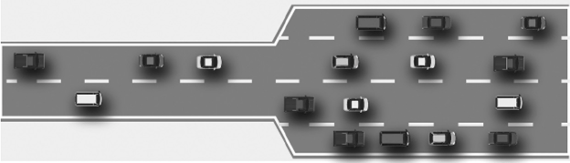
FIGURE 2.15 Relationship between vehicle transportation capacity and road width.
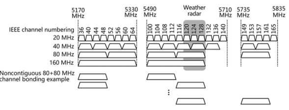
FIGURE 2.15 Relationship between vehicle transportation capacity and road width.
802.1 lac also introduces channels with 80 MHz, 80+80 MHz (noncontiguous, nonoverlapping), and 160 MHz bandwidths, as illustrated in Figure 2.16.
An 80 MHz channel results from bonding two contiguous 40 MHz channels, and a 160 MHz channel from bonding two contiguous 80 MHz channels. Given the scarcity of contiguous 80 MHz channels, two noncontiguous 80 MHz channels can also be bonded to obtain a bandwidth of 160 MHz (80+80 MHz).
In the case of bound channels, 802.11 standards stipulate that one will function as the primary channel and the other as the secondary channel. Management packets, such as Beacon frames, must be sent on the primary channel rather than the secondary channel. In a 160 MHz channel, a 20 MHz channel must be selected as the primary channel. The 80 MHz channel containing this 20 MHz channel is the primary 80 MHz channel and the one without this 20 MHz channel is the secondary 80 MHz channel. In the primary 80MHz channel, the primary 40MHz channel contains this 20 MHz channel while the secondary 40 MHz channel does not. The remaining portion in the primary 40 MHz channel is called the secondary 20 MHz channel. See Figure 2.17.
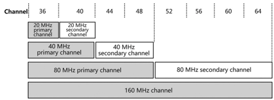
Figure 2.17
802.11ac supports channel bandwidths ranging from 20 to 160 MHz, and this flexibility complicates channel management. Reducing interchannel interference and maximizing channel utilization on a network where devices use channels with different bandwidths is a significant challenge.
802.1 lac defines an enhanced request to send (RTS)/clear to send (CTS) mechanism to coordinate which channels are available, and when.
As illustrated in Figure 2.18, 802.lln utilizes a static channel management mechanism, where a busy subchannel will cause the entire bandwidth to become unavailable. 802.1 lac uses a dynamic spectrum management mechanism. The transmitter sends RTS frames containing frequency bandwidth information on each 20 MHz channel, and the receiver determines whether the channels are busy or idle before responding with CTS frames only on available channels, which must encompass the primary channel. These CTS frames contain channel information. If the transmitter determines that some channels are extremely busy, it halves the transmit bandwidth as a result of dynamic management.
Dynamic spectrum management improves channel utilization and reduces interference between channels, as illustrated in Figure 2.19. With this mechanism, two APs can work on the same channel concurrently.
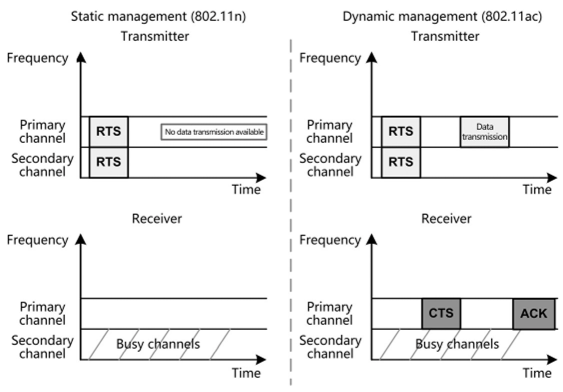
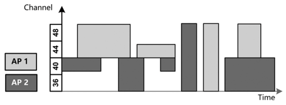
FIGURE 2.19 Two APs working on the same channel.
MIMO
Basic Concepts
Before using MIMO, we first need to understand single-input singleoutput (SISO). As illustrated in Figure 2.20, SISO establishes a unique path between the transmit and receive antennas, and transmits one signal between the two antennas. In the wireless system, each signal is defined as one spatial stream.
However, data transmission that uses SISO can be unreliable and rate limited.
To address this issue, in single-input multiple-output (SIMO), antennas are added on the receiver (terminal) side to allow two or more signals to be received concurrently, as illustrated in Figure 2.21.
However, data transmission that uses SISO can be unreliable and rate limited.
In SIMO, two signals are sent from one transmit antenna carrying the same data. If one signal is partially lost during transmission, the receiver can obtain the rest of the data using the other signal. In contrast to SISO that uses only one transmission path, SIMO ensures better transmission reliability with the transmission capacity unchanged. SIMO is also referred to as receive diversity.
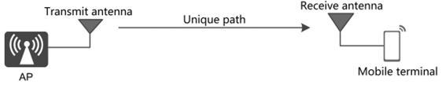
FIGURE 2.20 SISO.
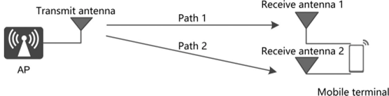
FIGURE 2.22 MISO.
Figure 2.22 illustrates two transmit antennas and one receive antenna.
In Figure 2.22, because there is only one receive antenna, the signals sent from the two transmit antennas are combined into one signal on the receiver. This mode, also referred to as multiple-input single-output (MISO) or transmit diversity, delivers the same effect as SIMO.
As the above analysis of SIMO and MISO proves that transmission capacity relies heavily on the number of transmit and receive antennas, it would be ideal to employ two antennas on both the transmitter and receiver sides to double the transmission rates by transmitting and receiving two signals separately.
As illustrated in Figure 2.23, MIMO is a transmission mode that uses multiple antennas on both the transmitter and receiver sides. MIMO enables the transmitting and receiving of multiple spatial streams (multiple signals) over multiple antennas concurrently, and it also differentiates between the different signals. Using technologies such as space diversity and spatial multiplexing, MIMO boosts system capacity, coverage scope, and SNR without increasing the occupied bandwidth.
The two key technologies used by MIMO are space diversity and spatial multiplexing.
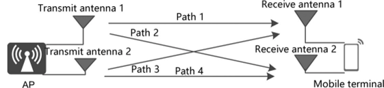
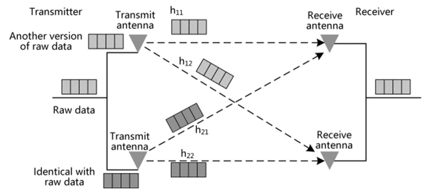
FIGURE 2.24 Space diversity.
Space diversity is a reliable transmission technique that is used to generate different versions of the same data stream and render them encoded and modulated before transmitting them on different antennas, as illustrated in Figure 2.24. This data stream can be either a raw data stream to be sent or a new data stream as a result of certain mathematical transformation on a raw data stream. The receiver uses a spatial equalizer to separate the received signals and performs demodulation and decoding to combine the signals of the same data stream and restore the original signals.
Spatial multiplexing divides the data to be transmitted into multiple data streams and renders them encoded and modulated before transmitting them over different antennas. This improves data transmission rates. Antennas are independent of each other. One antenna functions as an independent channel. The receiver uses a spatial equalizer to separate the received signals and performs demodulation and decoding to combine the data streams and restore the original signals, as illustrated in Figure 2.25.
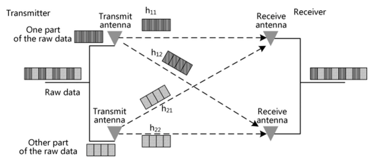
Figure 2.25
Multiplexing and diversity both involve space-time coding technology to convert one channel of data into multiple channels of data.
Relationship between Spatial Streams and the Number of Antennas
A MIMO system is generally written as M x N MIMO, with M and N indicating the number of antennas used for transmission and reception, respectively. It can also be written as MTNR, with T and R indicating transmission and reception, respectively. The number of spatial streams in MIMO is usually less than or equal to the number of antennas used for transmission or reception (the smaller of the number for transmission and that for reception prevails). For example, 4x4 MIMO (4T4R) enables the transmission of four or fewer spatial streams, and 3x2 MIMO (3T2R) enables the transmission of one or two spatial streams.
Beamforming
When the same signals are concurrently transmitted over multiple antennas in a wireless system, spatial holes may be generated due to transmission concurrency and multipath interference. For example, if signals, after being reflected by walls and devices, arrive at a location with two paths having the same attenuation but opposite phases, the two paths offset each other, leading to a spatial hole, as illustrated in Figure 2.26.
802.1 In has proposed that beamforming technology be used to avoid spatial holes. Beamforming superimposes two beams by precompensating the phases of transmit antennas. Beamforming uses the weights derived based on the transmission environment or channel state information (CSI) to improve reception.
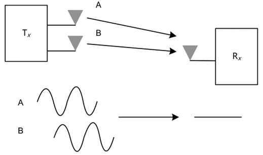
Figure 2.26
MU-MIMO
MIMO can be classified into single-user MIMO (SU-MIMO) and MU-MIMO by the number of users it allows to simultaneously transmit or receive multiple data streams.
SU-MIMO increases the data transmission rate of a single user by transmitting multiple parallel spatial streams over the same time-frequency resources to the user. In Figure 2.27, SU-MIMO is implemented between an AP with four antennas and a user with two antennas.
MU-MIMO increases the transmission rates of multiple users by transmitting multiple parallel spatial streams over the same time-frequency resources to multiple different users. In Figure 2.28, MU-MIMO is implemented between an AP with four antennas and four users each with one receive antenna.
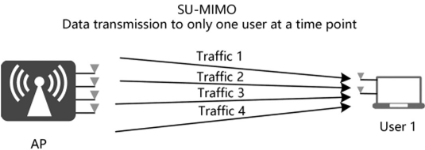
Figure 2.27
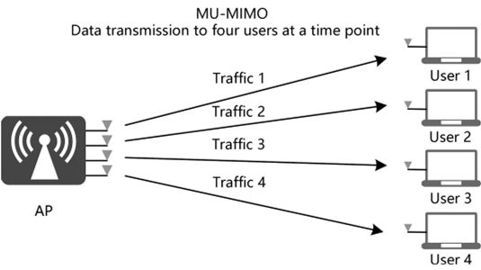
Figure 2.28
Space division multiple access (SDMA) is essential to MU-MIMO. SDMA transmits multiuser data over the same timeslot and subcarrier but using different antennas to differentiate users spatially, thereby accommodating more users and increasing link capacity.
References
[1] https://ebrary.net/194981/computer_science/channel_bonding#69171